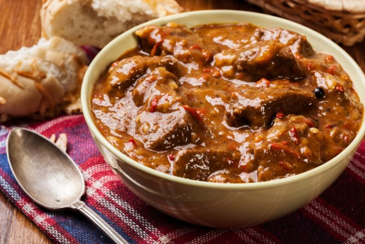

Rustic Beef Stew

Description
Ingredients
- 4 cups beef broth
- 2 pounds beef chuck
- 3 cloves garlic, minced
- 3 tablespoons flour
- 2 tablespoons canola oil
- 1 tablespoon Worcestershire
- 1 shallot, diced
- 1 (14oz.) can fire roasted red bell peppers
- 1 (10 oz.) can cream of mushroom soup
- 1 (6 oz.) can tomato paste
- Kosher salt and pepper, to taste
Steps
- Place flour in a large bowl and toss beef until coated.
- Heat 1 tablespoon olive oil in a large Dutch oven over medium heat, and, working in batches, brown beef. Set aside.
- Add diced shallot and cook for 2-3 minutes or until softened.
- Add garlic, stirring frequently for 1 minute or until fragrant.
- Mix in fire-roasted bell peppers, tomato paste, beef broth, Worcestershire, and browned beef, stirring to pick up additional flavor from the beef bits. Bring to a boil, then reduce heat and cover for 1 hour.
- After 1 hour, stir in cream of mushroom soup and continue cooking for 30 minutes.
- Ladle into serving bowls and serve with a side of crusty bread. Enjoy!